Weekend nel Khareef
- Giorno 1Ayn Razat al mattino, Wadi Darbat e la sua cascata a mezzogiorno, il castello di Taqah al ritorno.
- Giorno 2La tomba del profeta Giobbe tra le colline nebbiose, poi i geyser di Mughsail e l’incenso al souq di Al Haffa.
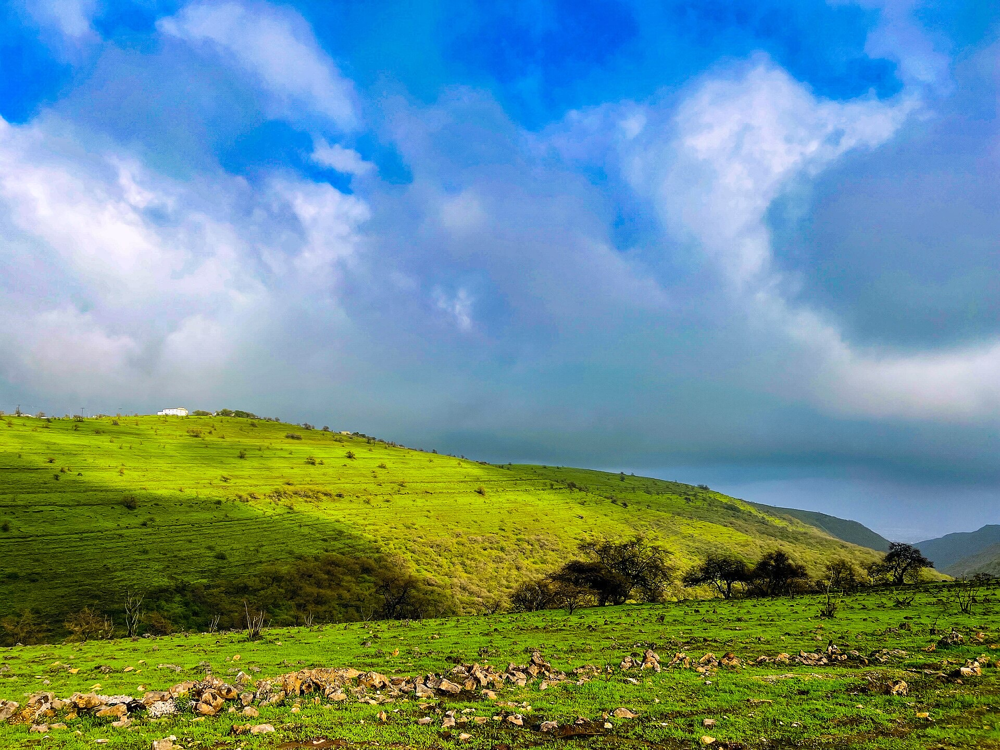
Sedici luoghi che valgono il viaggio, dalle rovine dell’incenso sulla costa alle cascate del Khareef e alle dune del Rub al-Khali, con le distanze dalla nostra porta e il periodo migliore.
Distanze e tempi di guida dall’hotel, su strada, approssimativi. Toccate un numero sulla mappa per andare al luogo.
Una lunga e tranquilla spiaggia di sabbia a est della città, perfetta per una passeggiata serale.
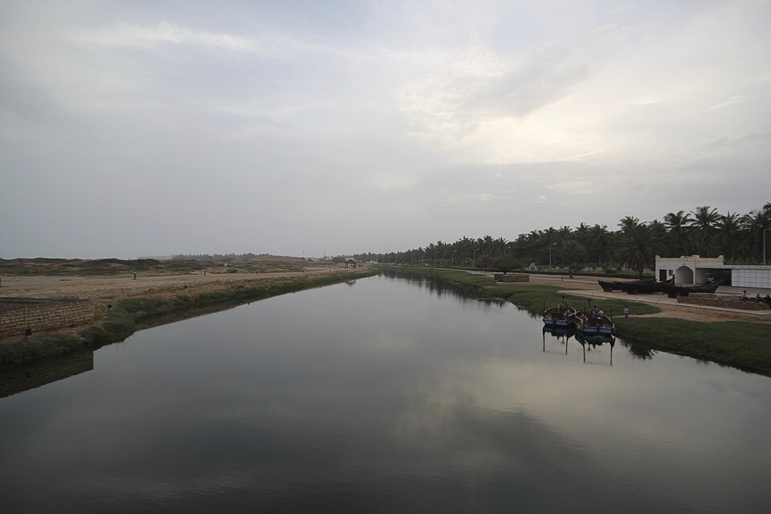
Rovine del porto medievale di Zafar, sito UNESCO, con accanto un museo sul commercio dell’incenso.
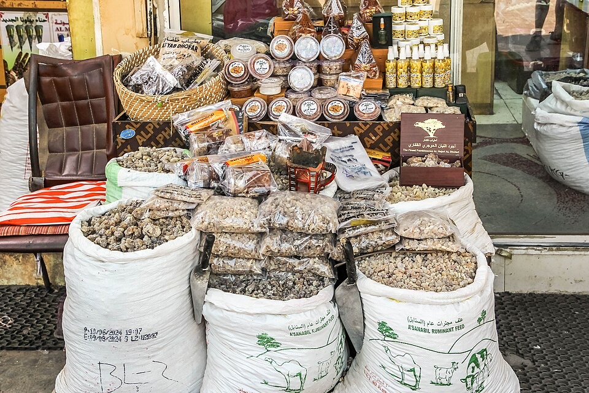
Il mercato della vecchia Salalah per incenso, bruciatori e profumi, con bancarelle di noci di cocco lungo la strada della spiaggia.
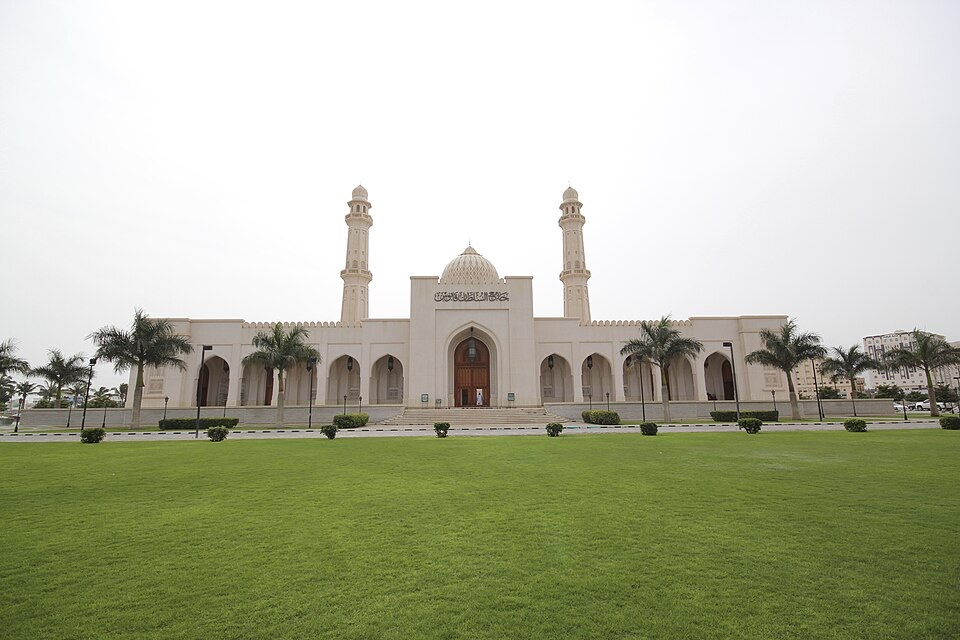
La grande moschea di Salalah. I visitatori sono benvenuti fuori dagli orari di preghiera; abbigliamento sobrio.
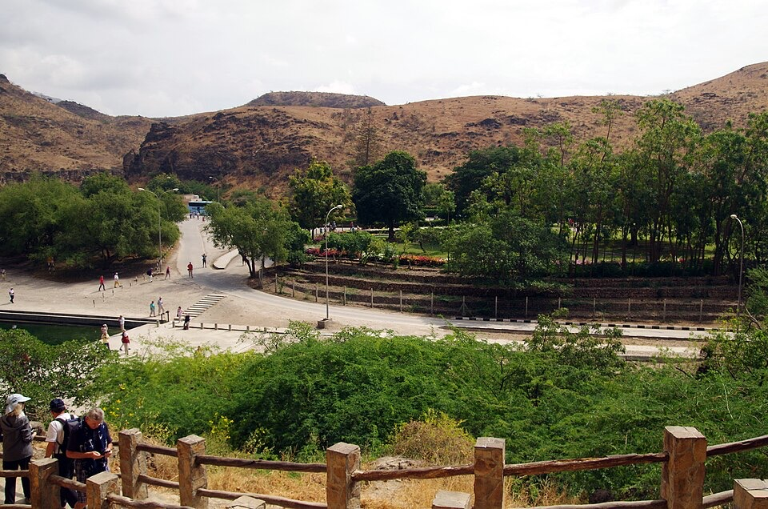
Un parco alimentato da una sorgente, con vasche, palme e giardini ai piedi delle montagne.
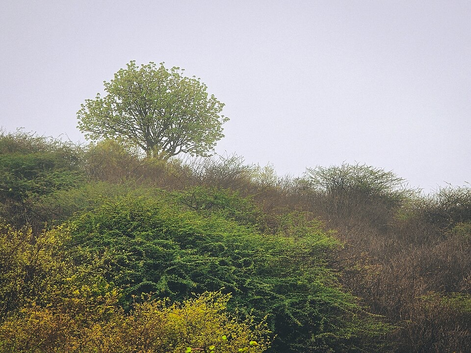
Una sorgente ombreggiata con un ruscello dove si radunano gli uccelli, a pochi passi dal parcheggio.
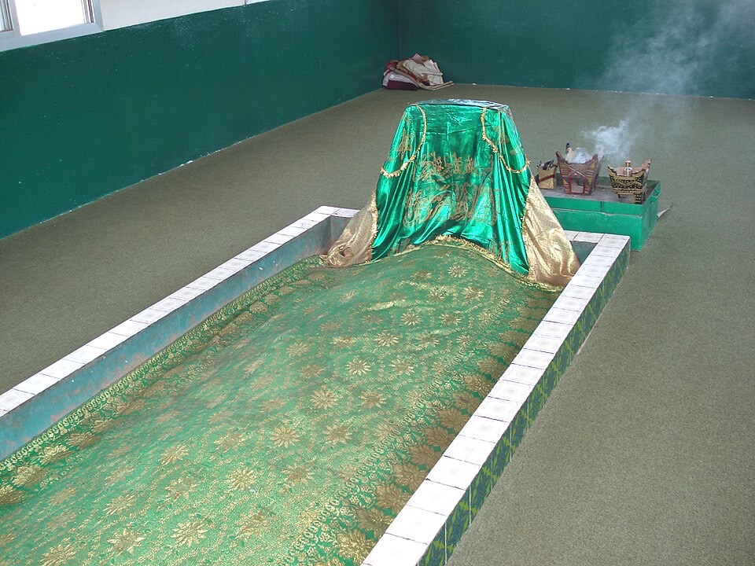
Un santuario in cima a una collina, con ampia vista sulla pianura quando la nebbia si alza.
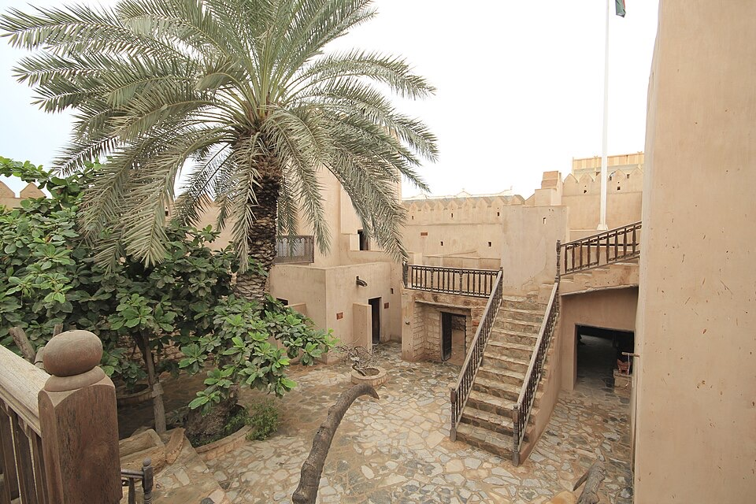
Un forte restaurato in un villaggio di pescatori, con le stanze arredate come un tempo.
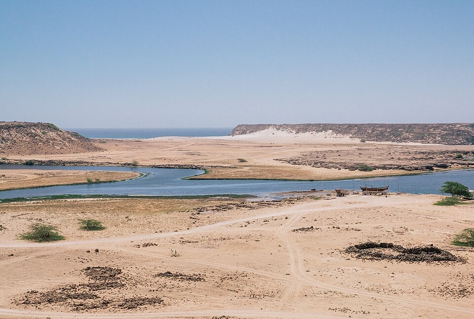
Rovine di un antico porto dell’incenso sopra una laguna piena di uccelli.
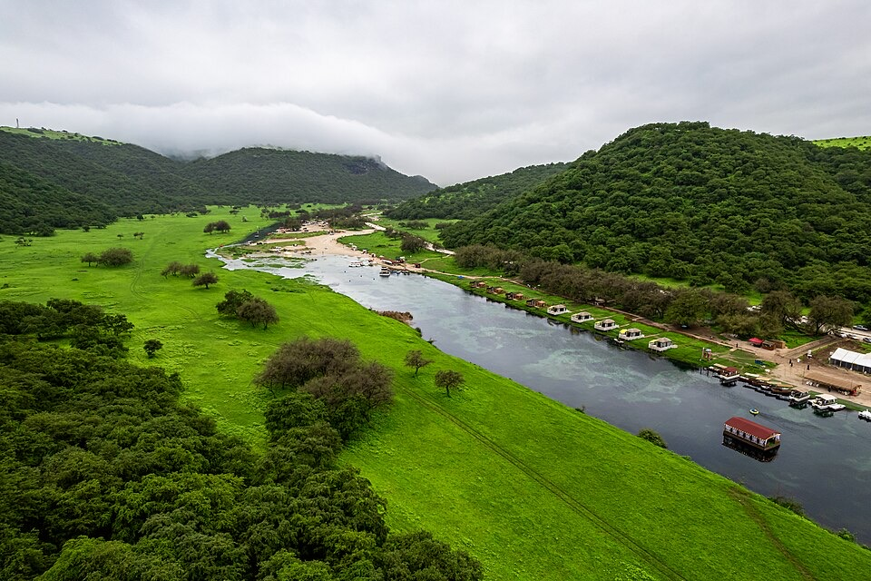
Una valle verde con un lago, barche e cammelli al pascolo e, durante il Khareef, la cascata.
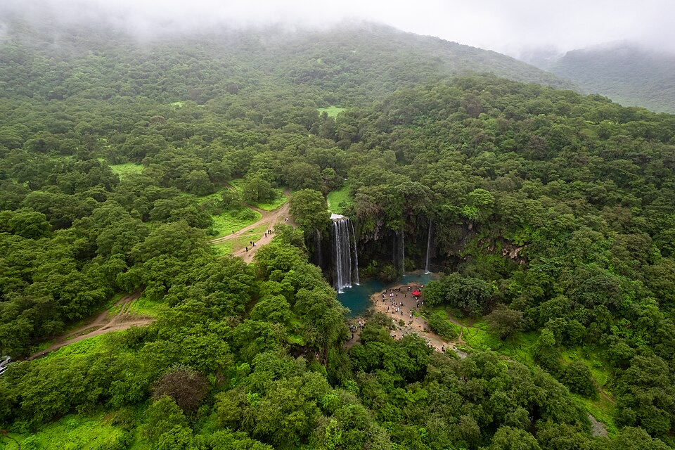
Una cascata stagionale in una gola ai piedi delle montagne, al suo meglio dopo le piogge.
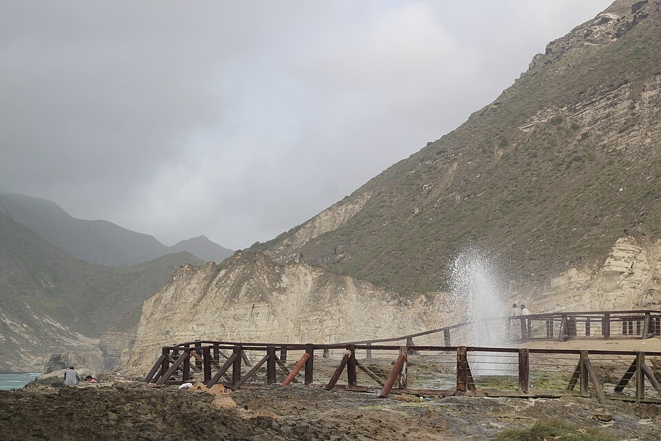
Una spiaggia bianca sotto le scogliere e i geyser marini della grotta di Al Marneef, che zampillano con l’alta marea.
Una caletta appartata alla fine della strada a tornanti dopo Mughsail. Portate acqua.
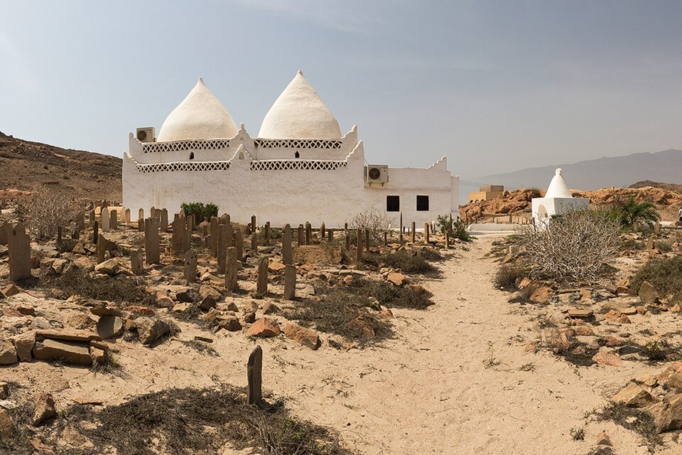
Un’antica città mercantile con case in legno intagliato, un forte e, vicino, la tomba a cupola di Bin Ali.
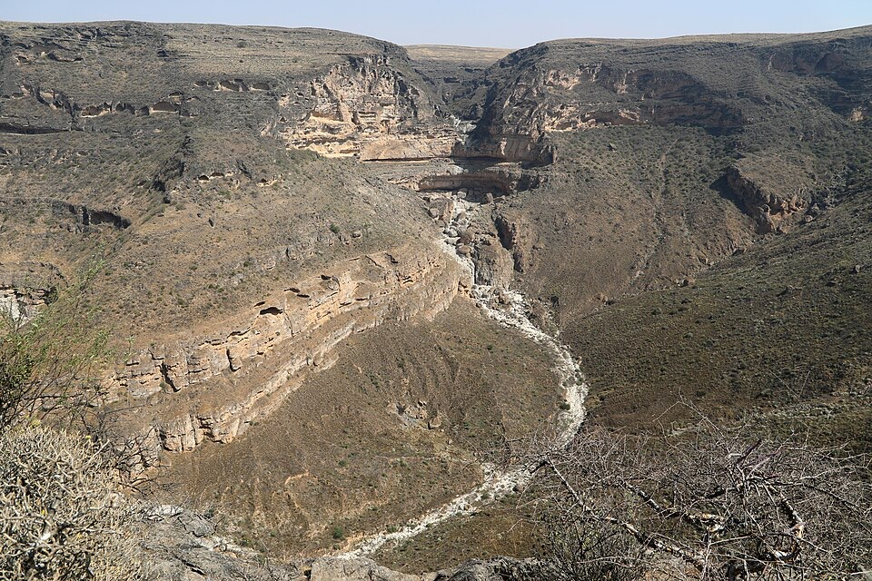
Un belvedere in cima alle scogliere, alto sulla costa, più limpido nelle mattine d’inverno.
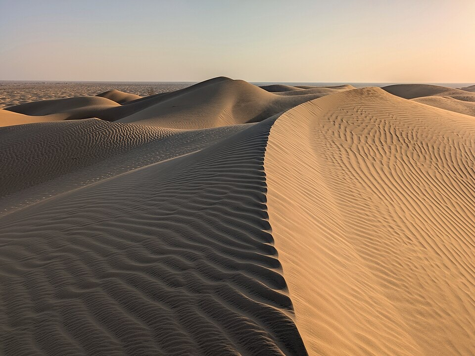
Un’intera giornata verso nord, oltre le montagne, fino alle rovine di Ubar e alle prime dune del Rub al-Khali.
Un punto di partenza. Prenotiamo l’auto e adattiamo il piano al meteo del giorno.
Salalah ha una stagione balneare in inverno e una verde stagione dei monsoni in estate. Massime diurne tipiche:
Stagione balneareCaldo & seccoKhareef
Non ci sono bus turistici tra i luoghi. Organizziamo un’auto con autista, un taxi o un noleggio, di solito in giornata.
La nebbia può ridurre la visibilità a pochi metri. Guidate piano con i fari accesi e aspettatevi cammelli sulla strada.
Abiti leggeri, una giacca impermeabile durante il Khareef e spalle e ginocchia coperte nelle moschee e nei villaggi.
Durante il Khareef il mare è mosso e spesso è vietato fare il bagno. In inverno nuotate dove è calmo e dove nuotano altri.
Fate il pieno prima del deserto e dell’estremo est della costa, dove i distributori sono lontani, e portate acqua.
Scriveteci prima di partire: vi diremo cosa è aperto, che tempo fa e quanto dura il viaggio.
Le foto dei luoghi provengono da Wikimedia Commons e sono usate con le licenze Creative Commons indicate. Grazie ai fotografi.
Ogni luogo di questa pagina è una gita di un giorno da Saadah. Diteci le vostre date: rispondiamo con il prezzo e vi aiutiamo a organizzare.
WhatsApp +968 9726 0111